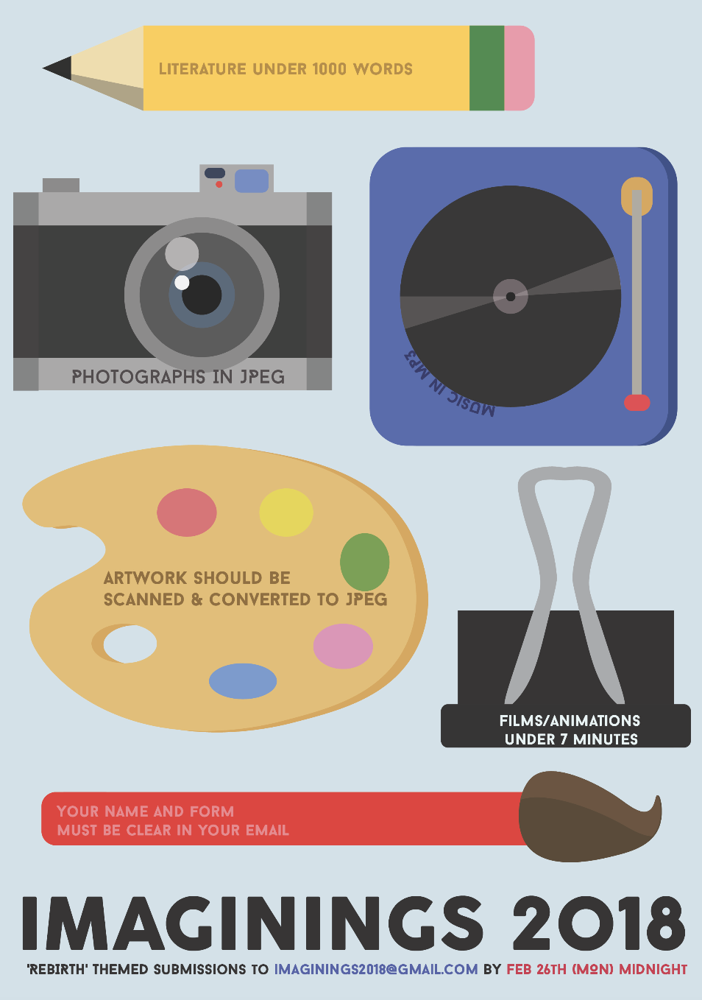
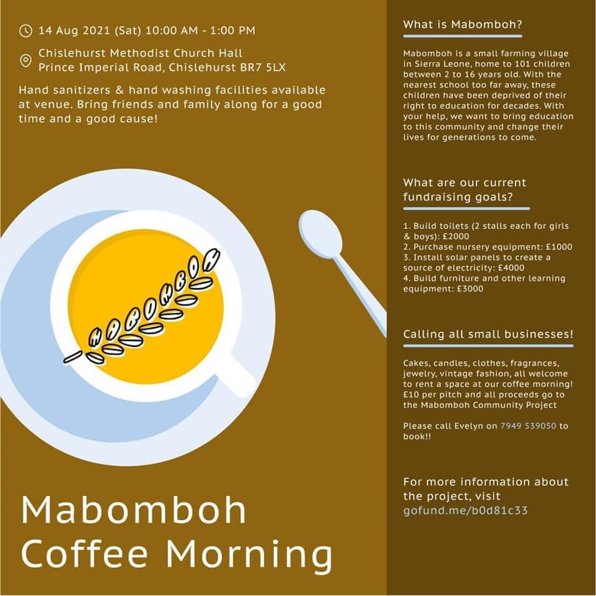
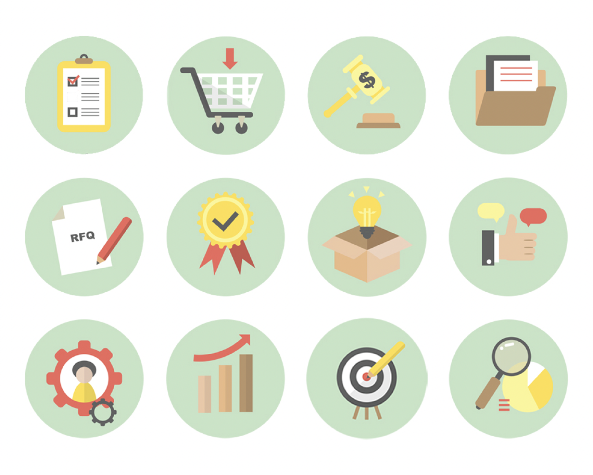
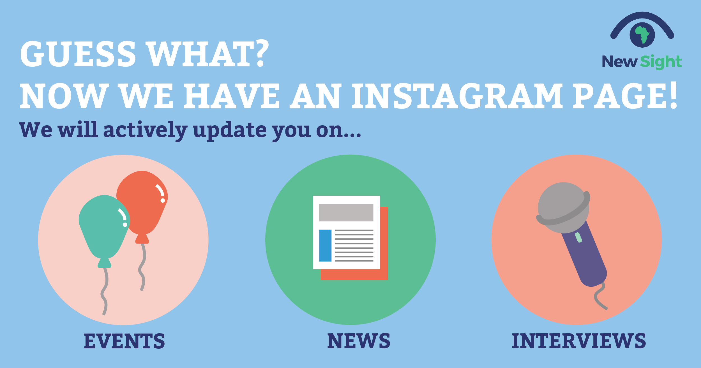
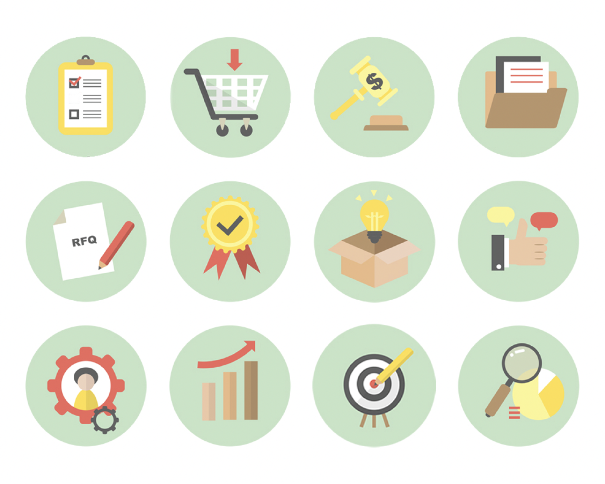
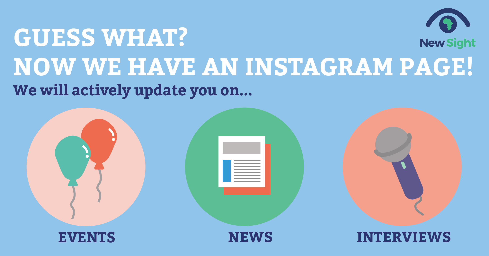

Miscellaneous Design & Marketing Work


My design journey started when I started creating posters for student groups and NGOs. I have had projects designing wireframes for a football fantasy app, content for social media, and editing films and photos for jewellery brands and charity groups.


 


